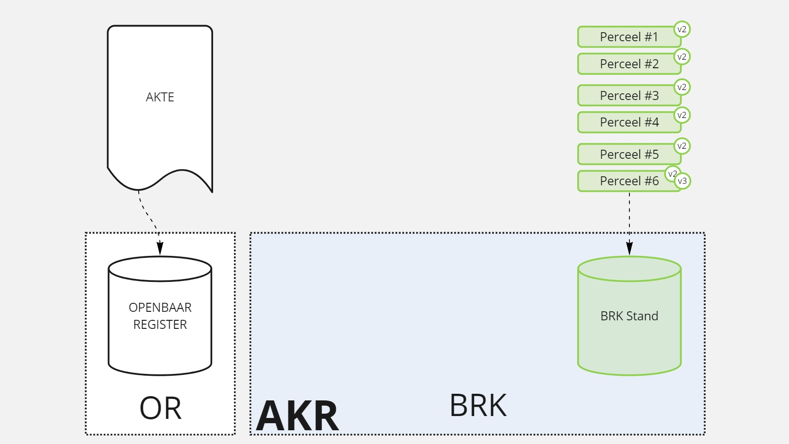
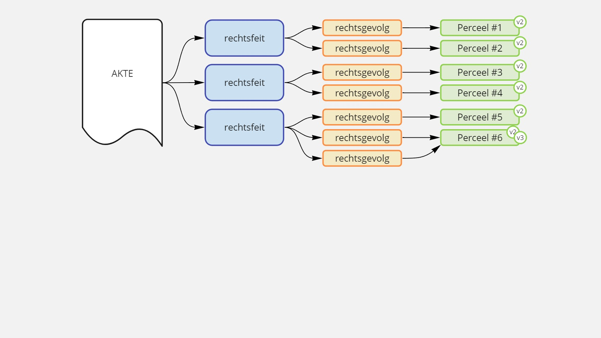
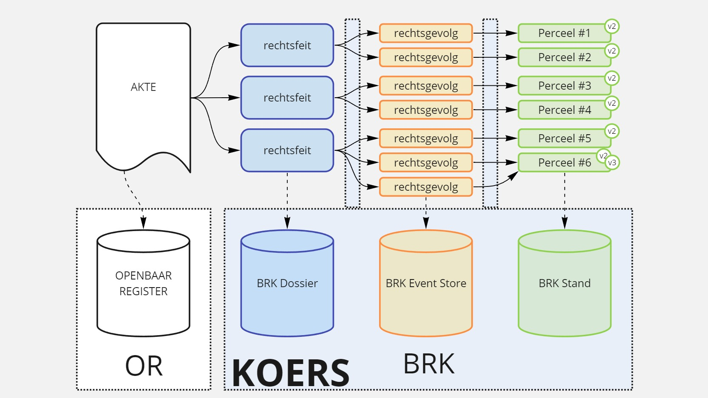
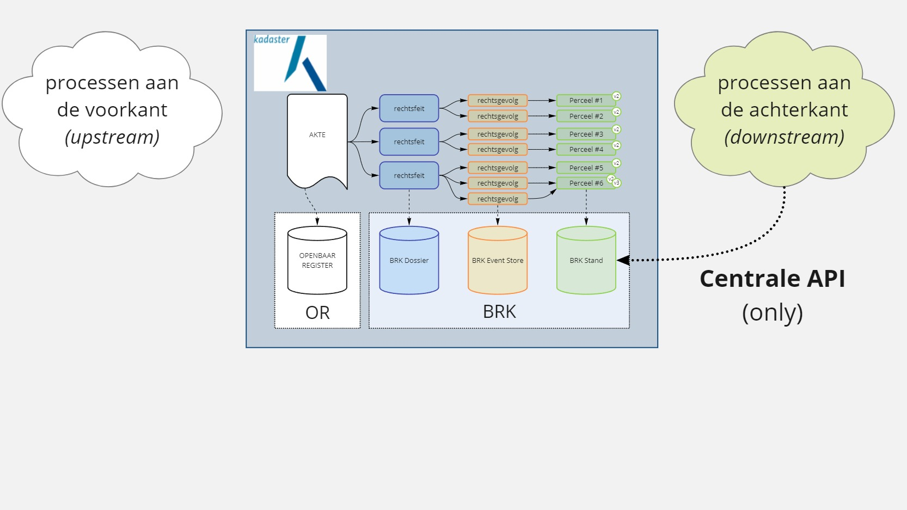
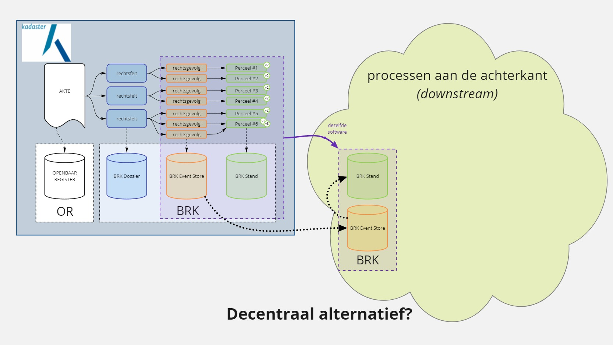
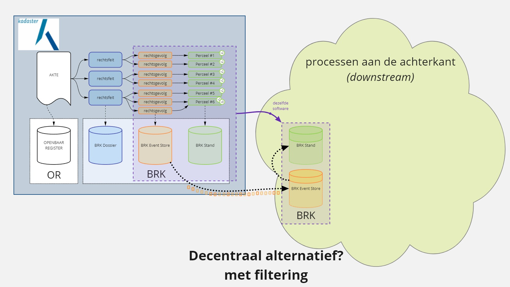
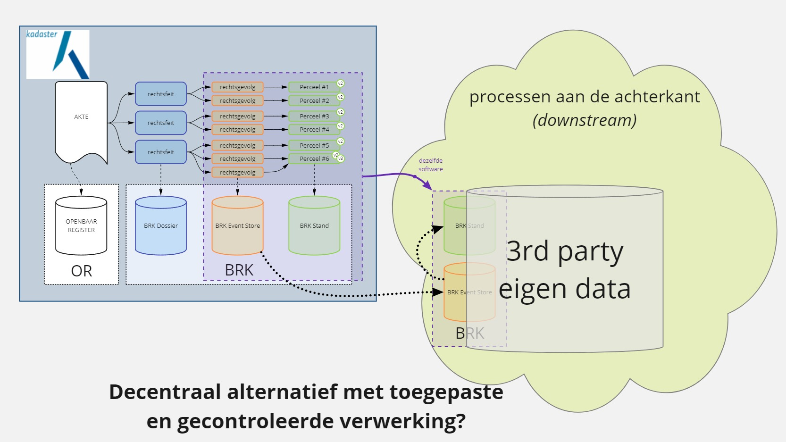

Basisregistratie Kadaster
In het bijhouden van de Basisregistratie Kadaster (BRK) maakt het Kadaster gebruik van Event Sourcing. Daarvoor heeft het Kadaster de paradigma verschuiving doorgemaakt van 'single model' naar 'Commands, Events & Queries'.
KOERS
Het oorspronkelijke systeem kende een gescheiden systeem voor de notariële aktes in het Openbaar Register en de BRK (AKR, Automatisering Kadastrale Registratie). Herkenbaar. Gebruikelijk.

Voor het nieuwe systeem, KOERS, het Kadastraal Objecten en Rechten Systeem, hebben we moeten ontwerpen welke gegevens (data) in de notariële aktes staan. Deze noemen we 'Rechtsfeiten'. Vervolgens hebben wij ontworpen, de Kadasterwet in de hand, hoe Rechtsfeiten wijzigingen in de Kadastrale Registratie effectueren. Dat hebben we beschreven in 'Rechtsgevolgen'. Dit zijn de Events uit Event Sourcing. En vervolgens hebben we ook de verwerking in de (primaire) projectie ontworpen.

Uiteraard hebben we de ontwerpen omgezet in werkende software. Het KOERS systeem (dubbelop voor de
oplettende lezer  ) Side note: We hebben daarbij automatisering
serieus genomen door de toepassing van continuous delivery. Gestart tijdens de projectfase,
doorgezet sinds de livegang oktober '18, tot vandaag de dag nog steeds met continue releases naar de
productie omgeving
) Side note: We hebben daarbij automatisering
serieus genomen door de toepassing van continuous delivery. Gestart tijdens de projectfase,
doorgezet sinds de livegang oktober '18, tot vandaag de dag nog steeds met continue releases naar de
productie omgeving 

Kansen
Het systeem KOERS biedt veel kansen om door te ontwikkelen richting een gebeurtenisgedreven register. En toch. In de digitale overheid van vandaag wordt vooral gestuurd op 'een centrale API'. Eén bron. Eén centrale API. Uitsluitend gebruik van deze centrale API door alles en iedereen.

Vanuit het denken in protocollen is dit ... een goede ontwikkeling om allerlei ongecontroleerde
kopieën van de BRK tegen te gaan. MAAR het is ook ontoereikend en zelfs onmogelijk als
eindoplossing. En wat is dan een alternatief scenario? Wel ... (nogmaals) denken in protocollen
 Om te beginnen is een door de bronhouder, dus Kadaster, gecontroleerde kopie bij een andere
partij wél mogelijk (opnieuw, op basis van gebeurtenisgedreven
registers).
Om te beginnen is een door de bronhouder, dus Kadaster, gecontroleerde kopie bij een andere
partij wél mogelijk (opnieuw, op basis van gebeurtenisgedreven
registers).

Hier komen nieuwe mogelijkheden tot onze beschikking! Het is mogelijk om per afnemer te filteren

De reden van een afnemende / derde partij voor het gebruik van de BRK informatie is nooit om
deze te bekijken zoals die is. Er is altijd een doel waarvoor de BRK data gebruikt gaat worden. Stel
nou dat we met z'n allen open samenwerken en dat zowel de
projectie van de BRK als de toepassing waarvoor de BRK data gebruikt wordt als open
source gepubliceerd zijn. Dan wordt het mogelijk om een aangepaste
projectie te maken specifiek geschikt voor het doel waarvoor de BRK data gebruikt wordt. En wordt
het ook mogelijk voor het Kadaster om met een andere partij mee te kijken naar dat gebruik van de
BRK data. Zo ontstaat er een veel beter begrip en validatie dat de BRK data juist wordt gebruikt en
dat de toepassing in een ander domein juist is. Dát is pas een (rechts)zekerheid! 
